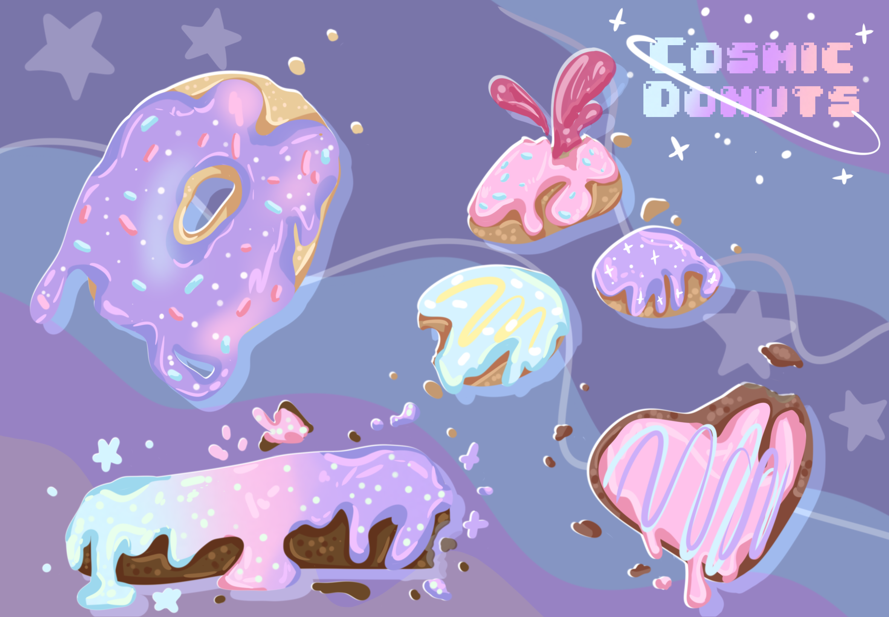

i learned once that deer and wild boar are dichromats, meaning they can only see green and blue. while to us, a tiger's fur stands out a lot in the wild, it actually is a great camoflauge in order for them to hunt their prey. this piece is based on that.

i really loved experimenting with different textures here, even using my line art from my art class to give it a sort of dry, papery scrapbook feel.

in a visual communication class i learned how to animate in adobe illutsrator. i prefer procreate more, which is why i finished the rest there, but regardless I think it turned out amazing with complementary colors and shading.

this was just a fun past time for me experimenting with air brushing and shading. i also wanted a sprinkle donut while making this so theres that too.
© Original template "FIRSTBASE" by https://freedreamweavertemplates.org/. Kimberly Lawson, 2026. All rights reserved.